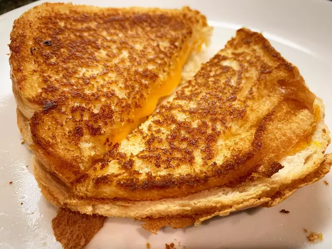

Grilled Cheese Sandwich

Learn how to make a grilled cheese sandwich in a nonstick pan with buttered bread and American Cheddar for a classic hot sandwich.
Description
How to make grilled cheese
You'll find a detailed ingredient list and step-by-step instructions in the recipe below, but let's go over the basics:
Ingredients
- 4 slices of White bread
- 2 slices of Cheddar cheese
- 3 tablespoons of butter
Best cheese for grilled cheese
This recipe calls for sliced Cheddar, which is a wonderfully crowd-pleasing cheese. You can use sharp Cheddar, mild Cheddar, or a blend of both. Another classic choice is plain ol' sliced American cheese – it tastes nostalgic and gives you a gorgeous cheese pull.
Other delicious options are Gruyere, Brie, Fontina, Gouda, Pepper Jack, and havarti.
Best bread for grilled cheese
This recipe calls for plain white sandwich bread. You could also use sourdough, brioche, or even ciabatta. You can really make grilled cheese with any type of bread you like, but you should make sure the loaf is sturdy enough to handle the heat. Thinly sliced, delicate breads will quickly fall apart.
How to make the BEST grilled cheese
- Preheat a nonstick skillet over medium heat. Generously butter one side of a slice of bread. Place bread butter-side down in the hot skillet; add 1 slice of cheese. Butter a second slice of bread on one side and place butter-side up on top of cheese.
- Cook until lightly browned on one side; flip over and continue cooking until cheese is melted. Repeat with remaining 2 slices of bread, butter, and slice of cheese.